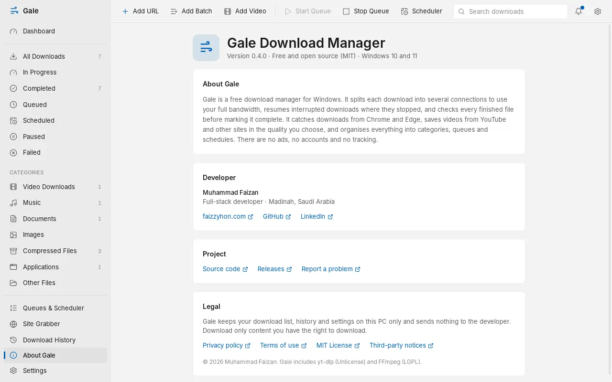

Downloads that pick up where they stopped.
Gale splits each file into up to 32 parts and downloads them at once, resumes after a crash or restart, and takes over downloads from Chrome and Edge. Free, open source, no ads.


How Gale downloads: each bar is one connection fetching its own part of the file. When a part finishes early, that connection helps with the slowest one.
Everything a download manager should do, and nothing you didn't ask for.
Catches downloads from your browser
Install the Gale extension in Chrome or Edge and downloads go to Gale instead. Before a file starts, the Download File Info window lets you choose its name, category and folder, or save it for later.
- Choose which file types and sizes Gale takes over
- Right-click any link to download it, queue it, or grab every link on the page
- Downloads from sites you're signed in to just work

Shows exactly what's happening
Every download gets a small progress window with its speed, time left and connections. Open the details to see the speed over the last minute and how far each connection has got. When it finishes, open the file or its folder in one click.
- Pause, resume or cancel from the window
- Interrupted downloads continue where they stopped, even after a restart
- Every file is checked before it's marked complete
Saves videos in the quality you pick
Hover a video and click Download: a menu on the page lists every quality, from 1080p down to audio only. Pick one and it starts downloading. Gale joins the video and sound into one file.
- Works with YouTube and most video sites, plus HLS and DASH streams
- Audio only as MP3, or as published
- Or paste the page into Gale's Add Video dialog
- DRM-protected video is not supported

Queue it, schedule it, walk away
Put downloads in a queue to run a few at a time, then schedule the queue for the night. Gale can shut down the PC when everything is done, with a 60-second chance to cancel.
- Once, daily, weekdays or weekly schedules
- Speed limit presets one right-click away in the tray
- Starts with Windows in the tray, so schedules always run

The details.
- Connections
- Up to 32 per file
- Resume
- After pause, crash or restart
- Torrents
- Magnet links and .torrent files
- Checks
- Size, and SHA-256 if you add one
- Browsers
- Chrome and Edge
- Proxy
- HTTP, HTTPS, SOCKS5
- Price
- Free, no ads, no account
Your downloads stay on your PC
Gale has no account, no ads, no analytics and no server of its own. Your download list lives in a file on your computer, and passwords for proxies are kept in Windows Credential Manager. The whole source code is public, so anyone can check.

Gale is free. Keep it that way.
Gale is built and maintained by one developer in his own time. If it saves you time, a coffee helps pay for code signing and keeps updates coming.